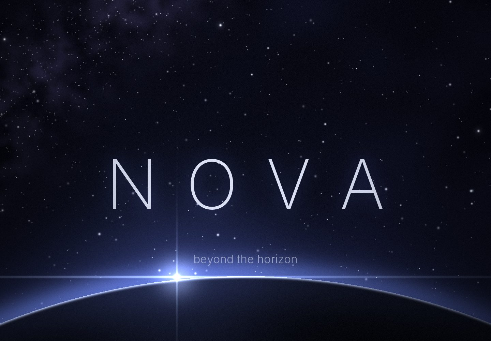

Un AI cu care vorbești în română. Te ascultă, îți răspunde cu voce, se uită la poze, desenează și te ajută la cod. Gratuit.
Apasă pe microfon și spune.
Nova aude ce spui, scrie cuvintele ca să le vezi și îți răspunde cu o voce naturală. Vorbește-i în română sau în engleză și îți răspunde în limba ta. Sau pornește modul conversație și vorbiți ca la telefon.
Totul într-un singur loc, liniștit.
Vorbești, îți răspunde
Îi vorbești și îți răspunde cu voce. Cu modul conversație vorbiți pe rând, fără să atingi telefonul. Alegi vocea, viteza și tonul.
Poze și PDF-uri
Apasă + și alege o poză sau un PDF. Nova îți spune ce e în ea, îți rezumă lecția sau îți explică eroarea de pe ecran.
Face imagini
Cere un desen și apare în chat. Alegi aspect de fotografie sau de desen de mână, apoi o salvezi sau o pui fundal.
Te ajută la cod
Codul vine în căsuța lui, cu buton de Copy code, gata de lipit în editor.
Sticlă mată, fundalul tău
Sticlă mată peste un fundal cu spațiul, făcut pentru Nova, în mod deschis și întunecat. Sau pune orice poză vrei.
Chaturile tale, peste tot
Te loghezi și chaturile te urmează pe telefon, PC și web. Le cauți, le fixezi sus pe cele importante, le redenumești și atingi o întrebare sugerată ca să continui.
Alarme și mementouri
„Amintește-mi la 6 să exersez la chitară.” Nova o setează și telefonul îți dă de știre la timp, chiar dacă Nova e închis.
Te ține minte
Spune-i cum te cheamă sau la ce lucrezi și ține minte, de la un chat la altul. Vezi sau ștergi orice notiță în Setări.
Caută pe internet
Întreabă de știrile de azi sau lipește un link, iar Nova caută, cu sursele chiar sub răspuns.
Română și engleză
Vorbește în română sau în engleză. Nova îți răspunde în limba ta și citește cu o voce naturală pentru limba respectivă.
Întrebări
Nova e gratuit?
Da. Nova e gratuit pe Android, Windows, iPhone și web, fără reclame. Folosește cheia ta gratuită de Google Gemini, pe care o iei de pe aistudio.google.com într-un minut.
Nova vorbește românește?
Da. Vorbește-i sau scrie-i în română sau în engleză și îți răspunde în aceeași limbă, cu o voce naturală.
Pot vorbi cu Nova fără să scriu?
Da. Apasă pe microfon ca să spui ceva, sau pornește modul conversație și vorbiți pe rând, fără să atingi telefonul. Nova îți răspunde cu voce și apoi te ascultă din nou.
Nova îmi poate pune alarme?
Da. Spune „amintește-mi la 6 să exersez la chitară”. Pe Android, mementoul apare chiar dacă Nova e închis.
Datele mele sunt private?
Cheia Gemini rămâne pe dispozitivul tău. Chaturile rămân pe dispozitiv, dacă nu te loghezi și nu pornești sincronizarea. Fără reclame și fără urmărire.
Cum instalez Nova pe iPhone?
Deschide aplicația web Nova în Safari, apasă Partajare, apoi Adaugă pe ecranul principal. Se deschide pe tot ecranul, ca o aplicație obișnuită.
Ia Nova pe orice dispozitiv.
Descarcă Nova pentru Android sau Windows. Pe iPhone, adaugă-l pe ecranul principal din Safari.
iPhone
- Deschide pagina în Safari.
- Apasă Deschide Nova.
- Apasă butonul Partajare, apoi Adaugă pe ecranul principal.
Android
- Apasă Descarcă pentru Android.
- Deschide fișierul descărcat Nova.apk.
- Dacă telefonul întreabă, permite instalarea aplicațiilor din browser, apoi apasă Instalează.
Windows
- Apasă Descarcă pentru Windows.
- Deschide Nova-Setup.exe.
- Dacă Windows te avertizează, apasă More info, apoi Run anyway.
Prima dată când deschizi Nova îți cere să te loghezi și să lipești o cheie Google Gemini gratuită (de pe aistudio.google.com). Cheia rămâne doar pe dispozitivul tău.